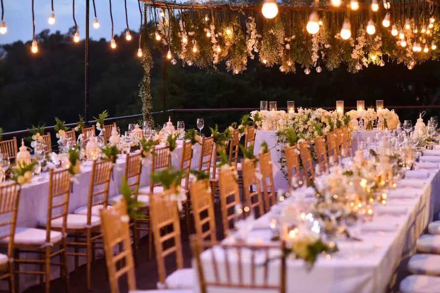

Taller de Reciclaje Creativo
Fecha: 05/04/2025
Ubicación: Ciudad Real
Organizadores: Iván Naranjo
Descripción: Únete a nosotros en el Taller de Reciclaje Creativo y aprende a transformar objetos cotidianos en increíbles obras de arte y útiles prácticos.
